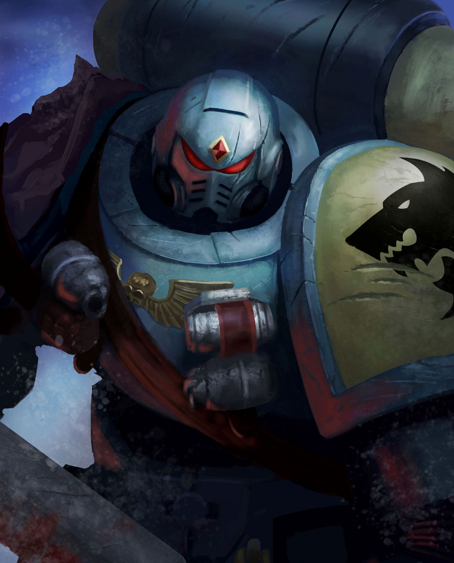

Dossier Astartes VIe Légion
Les Space Wolves furent la VIe Légion. Une force brutale, indocile, façonnée pour la chasse et la guerre rapprochée.
Leur identité fut scellée sur Fenris, monde de glace, de tempêtes et de bêtes gigantesques. Là-bas, la survie n’est pas une compétence. C’est une loi.

Lorsque Leman Russ prit le commandement de la légion, il ne fit pas d’eux de simples soldats. Il fit d’eux une meute.
Les Space Wolves combattent avec férocité, mais leur sauvagerie n’est pas désordre. Elle est instinct, hiérarchie et loyauté.
Durant la Grande Croisade, ils furent souvent employés comme force de punition. Lorsque l’Empereur voulait qu’un ennemi soit traqué, brisé et humilié, la VIe Légion était envoyée.
Leur loyauté envers l’Imperium est ancienne, mais jamais docile. Les Space Wolves méprisent les ordres qu’ils jugent lâches, les autorités trop éloignées du sang, et les vérités couvertes par trop de sceaux.
Leur patrimoine génétique porte le Canis Helix. Il leur confère force, instinct et endurance, mais il apporte aussi une menace. La bête n’est jamais loin.
Certains guerriers sombrent dans une transformation bestiale. D’autres apprennent à contenir cette rage et à la diriger contre l’ennemi.
Il faut comprendre ceci. Les Space Wolves ne combattent pas comme une ligne de bataille.
Ils combattent comme des prédateurs.
Et lorsqu’une proie est désignée, la fuite ne fait que prolonger la chasse.
Fin de l’extrait. Toute opération avec les Space Wolves doit tenir compte de leur autonomie et de leur doctrine de meute.